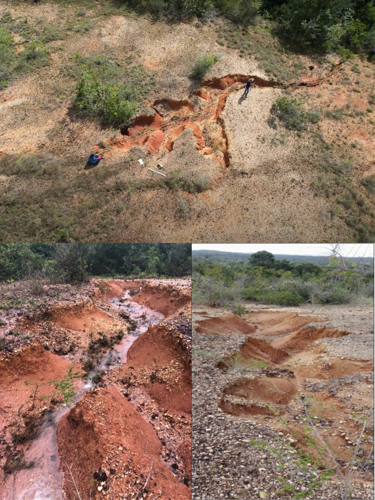

9 Protocolo Hidrogeotécnico para Dimensionamento de Paliçadas
Ao final deste capítulo, o leitor deverá ser capaz de conduzir o inventário morfométrico de uma feição erosiva por aerofotogrametria e segmentá-la em trechos hidraulicamente homogêneos, interpretar a velocidade de infiltração básica como critério de decisão sobre o regime de escoamento dominante, calcular a altura crítica de corte vertical a partir de parâmetros de resistência ao cisalhamento em condição inundada e verificar a estabilidade das paredes pelo limiar operacional adotado, deduzir a declividade de compensação a partir do limiar de destacamento do horizonte superficial, dimensionar altura efetiva, espaçamento e volume de retenção por segmento, e reconhecer as limitações que condicionam a transferência do protocolo para outros pedoambientes.
9.1 Por que um protocolo substitui a faixa fixa de espaçamento
Poucas rotinas publicadas encadeiam a caracterização hidrogeotécnica da feição, o cálculo das dimensões da barreira e os procedimentos de execução, de modo que a sólida base empírica internacional sobre check-dams permeáveis (Capítulo 8) raramente se converte em critérios aplicáveis com material disponível localmente. Na ausência dessa ponte, o projetista de campo recorre a faixas fixas de espaçamento herdadas de manuais, prescrição que omite a relação física entre altura efetiva, declividade do leito e declividade final do depósito.
O protocolo apresentado neste capítulo foi parametrizado em campo para paliçadas permeáveis de bambu em ravinas sobre Plintossolos dos Tabuleiros Costeiros de Sergipe e é aplicável, após nova parametrização, a outros pedoambientes tropicais. A característica didaticamente mais importante da rotina é que todas as grandezas de projeto derivam de medidas tomadas na própria feição, de modo que o mesmo procedimento produz dimensões distintas em ravinas distintas, comportamento esperado de um método de dimensionamento e ausente nas prescrições por faixa fixa.
As ravinas que parametrizaram o protocolo situam-se no povoado Timbó, em São Cristóvão (SE), sobre Plintossolo Háplico Distrófico do Grupo Barreiras, em vertentes com declividade de 7–24% sob pastagem degradada. O sítio combina clima úmido sazonal, precipitação média anual de 1.372 mm e máximo mensal histórico de 454,8 mm em maio, conforme a série 2005–2025 da estação automática INMET A409 (Aragão et al., 2013; Instituto Nacional de Meteorologia, 2025).
O inventário-piloto compreendeu seis feições erosivas ativas, identificadas de F1 a F6, com profundidades entre 0,40 e 1,50 m, larguras médias entre 1,30 e 2,37 m e comprimentos entre 8,0 e 35,0 m. As seções transversais variaram de formato em V, nas feições mais rasas, a formato em U, nas feições mais evoluídas, com cabeceiras escarpadas associadas a profundidades superiores a 1,0 m. A feição F1, com 35,0 m de extensão, 1,10 m de profundidade máxima e 1,37 m de largura média, foi selecionada como feição-tipo por representar a condição modal de ravina ativa em Plintossolo sob pastagem degradada, e a ela se referem os exemplos resolvidos deste capítulo.
A distribuição espacial das ravinas-piloto orientou a logística de transporte dos colmos, a ordem de instalação das estruturas e a leitura comparativa dos segmentos monitorados (Figura 9.1). A posição relativa de cada feição na vertente condiciona o regime de infiltração que será diagnosticado na Etapa 2, razão pela qual o inventário espacial precede qualquer medição pontual.

9.2 Rotina operacional
O dimensionamento hidrogeotécnico de paliçadas permeáveis segue rotina encadeada em oito etapas, na qual medições físicas determinam limites geométricos estruturais. Cada etapa possui produto e critério de saída explícitos, condição que permite auditar o projeto e identificar em que ponto uma intervenção malsucedida se afastou do procedimento (Tabela 9.1).
| Etapa | Produto | Insumo | Critério de saída |
|---|---|---|---|
| 1 | Inventário morfométrico | Voo UAV (GSD ≤ 5 cm) | \(W\), \(D\), \(S_f\) por seção |
| 2 | Diagnóstico hidráulico | Infiltrômetro de duplo anel | VIB por posição (cm h-1) |
| 3 | Parâmetros geotécnicos | Cisalhamento direto inundado | \(c\), \(\phi\), \(\gamma_{sat}\), \(H_c\) |
| 4 | Dimensionamento | Equações Equação 9.1 a Equação 9.7 | \(H\), \(\tau\), \(E\), \(V_r\) |
| 5 | Seleção de material | Disponibilidade local | Bambu, madeira roliça ou pedra seca |
| 6 | Construção | Equipe de 2–4 pessoas | Montagem com ancoragem lateral |
| 7 | Monitoramento | Método dos pinos | Taxa de assoreamento (cm mês-1) |
| 8 | Programação de manutenção | Tratamento para durabilidade e modelo exponencial de biodegradação | Janela de reposição modular (anos) |
As quatro primeiras etapas, que convertem medidas em dimensões, constituem o objeto deste capítulo. A seleção de material foi tratada em Capítulo 8, enquanto construção, monitoramento e programação de manutenção são desenvolvidas em Capítulo 10.
9.3 Etapa 1: inventário morfométrico e segmentação hidráulica
Os atributos geométricos da ravina, representados pela largura \(W\), pela profundidade \(D\) e pela declividade do fundo \(S_f\), são extraídos de Modelo Digital de Elevação gerado por aerofotogrametria com UAV. Na parametrização do protocolo empregou-se DJI Phantom 4 PRO a 40 m de altura, com sobreposição longitudinal de 80% e lateral de 60%, geometria de voo que corresponde a Ground Sampling Distance próximo de 1,1 cm/pixel no ortomosaico, com o modelo de elevação gerado por Structure from Motion em resolução de 4,4 cm/pixel (Raj et al., 2022; Wilkinson et al., 2024).
A extração obedece a três regras que preservam o sentido físico dos parâmetros. As seções transversais são extraídas a cada 1,0 m ao longo do eixo da ravina, resolução compatível com a individualização de segmentos hidraulicamente homogêneos e com a identificação de pontos de estrangulamento, onde a largura se reduz e a energia do escoamento se concentra (Thwaites et al., 2022). A declividade do fundo é calculada por regressão linear sobre o perfil longitudinal, procedimento que evita transferir ruído altimétrico pontual ao parâmetro que governará o espaçamento. A segmentação da feição adota como limite de homogeneidade hidráulica variações de declividade de fundo inferiores a 30% em seções consecutivas (Castillo et al., 2014), e em feições com extensão superior a 20 m as subdivisões menores que 10 m evitam a subestimação da energia do feixe de escoamento em trechos de alta declividade, prevenindo erosão retrogressiva localizada decorrente de espaçamentos excessivos.
Quando o voo não emprega pontos de controle no terreno nem posicionamento RTK ou PPK, a acurácia vertical absoluta permanece não verificada, e \(D\) e \(S_f\) devem ser interpretados como medidas relativas internas ao bloco fotogramétrico, suficientes para dimensionar e insuficientes para comparar campanhas sucessivas. Em vertentes sob pastagem, a nuvem densa reproduz preferencialmente o topo do dossel herbáceo, viés que tende a subestimar a profundidade em trechos com vegetação remanescente sobre as margens, atenuado pela priorização de faixas de solo exposto no interior da feição durante a extração das seções. Para monitoramento multitemporal por diferença de modelos digitais de terreno, os pontos de controle deixam de ser opcionais (Capítulo 25).
9.4 Etapa 2: diagnóstico hidráulico de infiltração
A capacidade de infiltração usada no dimensionamento é obtida com infiltrômetro de duplo anel, com anel interno de 20 cm e externo de 40 cm cravados 5 cm no solo (Bernardo et al., 2008). O desenho amostral prevê nove ensaios por feição, distribuídos entre os terços superior, médio e inferior da vertente, com três repetições por posição. As séries têm duração mínima de 120 min, com registros a cada 5 min até 30 min e, em seguida, a cada 10 min até que três leituras sucessivas variem menos de 10%, e a velocidade de infiltração básica operacional de cada posição corresponde à média das cinco últimas leituras da série.
Esse arranjo amostral vincula a parametrização hidráulica da paliçada ao gradiente vertical da vertente. O terço superior tende a apresentar maior infiltração sob horizonte A mais espesso, enquanto o terço inferior, próximo ao exutório da ravina, aproxima-se da condutividade hidráulica do horizonte Bt plíntico, que controla a geração de escoamento subsuperficial e a suscetibilidade à erosão por piping (Corrêa et al., 2023; Wang et al., 1999).
A velocidade de infiltração básica estratifica o regime de escoamento e orienta a decisão sobre qual prática deve preceder a instalação das barreiras (Tabela 9.2). Sob regime escoamento-dominante, o cisalhamento hidráulico de leito controla o destacamento sedimentar, condição que indica a necessidade de dissipação de energia por barreiras permeáveis (Lafayette et al., 2011; Lee et al., 2022), enquanto valores intermediários sugerem a incorporação de cobertura morta ou hidrossemeadura a montante para mitigar a geração de enxurrada antes do talvegue (Prats et al., 2012; Yue et al., 2020).
| VIB (cm h-1) | Regime dominante | Decisão de projeto |
|---|---|---|
| > 6 | Infiltração-dominante | Efeito isolado da paliçada reduzido; prioridade ao manejo da área de contribuição |
| 2–6 | Intermediário | Cobertura morta ou hidrossemeadura a montante antes do talvegue |
| < 2 | Escoamento-dominante | Dissipação de energia por barreiras transversais permeáveis |
A classificação pressupõe intensidades de chuva superiores à velocidade de infiltração básica durante os eventos de projeto, premissa que deve ser verificada contra a série pluviométrica local antes de aplicar o critério.
9.5 Etapa 3: caracterização geotécnica e estabilidade de talude
A paliçada é dimensionada para uma feição cujas paredes precisam permanecer estáveis ao longo do ciclo de preenchimento. Quando o colapso gravitacional das margens antecede o assoreamento, a estrutura é soterrada e desalinhada e o investimento se perde, razão pela qual o protocolo incorpora verificação geotécnica explícita antes de qualquer cálculo geométrico.
9.5.1 Ensaio de cisalhamento direto em condição inundada
Na parametrização, quatro corpos de prova de 50 × 50 × 20 mm foram preparados a partir de bloco indeformado coletado no horizonte Bt, a 1,20 m de profundidade junto à face da ravina. O carregamento normal foi aplicado em 20, 40, 80 e 200 kPa, com deslocamento controlado a 0,5 mm/min, em ensaio de cisalhamento direto em caixa conduzido sob condição rápida, sem adensamento prévio e com inundação, seguindo o arranjo experimental da ASTM D3080/D3080M. A ausência de medição de poropressão implica que os parâmetros obtidos são totais, ou aparentes, com interpretação distinta dos parâmetros efetivos.
A condição inundada representa o cenário de projeto pós-chuva intensa, no qual a frente de umedecimento alcança o horizonte Bt, a sucção matricial se anula e a resistência ao cisalhamento tende ao valor mínimo (Caputo & Caputo, 2015; Fredlund & Rahardjo, 1993). A massa específica dos grãos, determinada pelo método DNER-ME 93-94, foi de 2,65 g/cm³. A envoltória de Mohr-Coulomb ajustada aos quatro pontos do ensaio resultou em coesão aparente de 13,0 kPa e ângulo de atrito aparente de 34,9°, e o peso específico saturado, calculado a partir do índice de vazios final médio de 0,60, foi de 19,9 kN m-3.
9.5.2 Altura crítica de corte vertical
A resistência ao cisalhamento delimita a altura crítica de corte vertical por pressões ativas de Rankine com fenda de tração, grandeza que expressa até que profundidade a parede se sustenta sem reforço antes de mobilizar ruptura:
\[ H_c = \frac{4 c}{\gamma_{sat}} \tan\!\left(45^\circ + \frac{\phi}{2}\right) - \frac{2 c \sqrt{K_a}}{\gamma_{sat}} \tag{9.1}\]
onde \(c\) é a coesão aparente (kPa), \(\phi\) é o ângulo de atrito aparente, \(\gamma_{sat}\) é o peso específico saturado (kN m-3) e \(K_a = \tan^2(45^\circ - \phi/2)\) é o coeficiente de empuxo ativo. O primeiro termo quantifica a contribuição da coesão para a sustentação do corte, amplificada pelo fator de empuxo passivo associado ao ângulo de atrito, enquanto o segundo desconta a profundidade da fenda de tração que se abre no topo do talude e antecipa a ruptura. Com os parâmetros inundados da feição-tipo, a Equação 9.1 fornece \(H_c = 4{,}33\) m, valor sobre o qual se aplica fator de segurança de 1,5, usual em taludes permanentes de pequeno porte, resultando na altura admissível \(H_{c,adm} = 2{,}89\) m.
9.5.3 Limiar operacional de instabilidade
A razão entre a profundidade da feição e a altura admissível define o indicador de risco de colapso adotado no protocolo:
\[ \frac{D}{H_{c,adm}} > 0{,}40 \;\Rightarrow\; \text{suscetibilidade a colapso progressivo sob saturação} \tag{9.2}\]
Acima desse limiar, a feição é classificada como suscetível a instabilidade de talude por sapa basal e colapso gravitacional, condição que recomenda a fixação de paliçadas adicionais imediatamente a montante do recuo de cabeceira para conter a expansão da feição (Firoozi & Firoozi, 2024; Vanmaercke et al., 2021). Em Plintossolos, a verificação assume relevância particular porque a evolução das ravinas alterna estágios de incisão vertical, alargamento por colapso de taludes e estabilização parcial, sequência na qual a largura tende a aumentar mesmo após a profundidade atingir o limite do horizonte resistente subjacente (Hayas & Gómez, 2024; Sidorchuk, 2006).
A primeira ressalva é amostral. Um corpo de prova por tensão normal impede estimar a dispersão e o intervalo de confiança da envoltória, e a faixa de tensões ensaiada excede em uma ordem de grandeza a tensão vertical in situ na profundidade da ravina, condição que tende a superestimar o intercepto coesivo quando a envoltória é extrapolada para tensões baixas.
A segunda ressalva é estratigráfica. Os parâmetros provêm do horizonte Bt, amostrado a 1,20 m, enquanto o colapso das paredes mobiliza também o horizonte Ap sobrejacente, cuja resistência não foi ensaiada. A verificação de \(H_c\) é, portanto, representativa do material basal e indeterminada quanto ao terço superior do perfil, de modo que ensaiar ambos os horizontes e adotar o menor valor de \(H_c\) constitui a conduta conservadora em aplicações de maior exigência.
9.6 Etapa 4: dimensionamento hidráulico e geométrico
9.6.1 Altura efetiva
A altura efetiva da barreira acima do talvegue regula a retenção de sedimentos e o empuxo hidrodinâmico, e limita-se a um terço da profundidade da ravina:
\[ H \le \frac{D}{3} \tag{9.3}\]
Gradientes hidráulicos gerados por alturas superiores a \(D/3\) podem iniciar fluxos preferenciais de piping sob a fundação quando o depósito de sedimentos se aproxima da crista, risco ampliado em Plintossolos pela drenagem impedida e pelo acúmulo hídrico no contato abrupto Ap–Bt (Corrêa et al., 2023). A razão de um terço é adotada como critério operacional conservador, com fundamento empírico, sem derivar de ensaio de gradiente crítico.
9.6.2 Tensão cisalhante de leito
A estabilidade do leito é avaliada pela tensão cisalhante média do escoamento em regime permanente uniforme:
\[ \tau = \gamma \cdot R_h \cdot S_f \tag{9.4}\]
onde \(\gamma\) é o peso específico do fluido (9,81 kN m-3), \(R_h\) é o raio hidráulico (m), dado pela razão entre a área molhada e o perímetro molhado da seção, e \(S_f\) designa a declividade hidráulica longitudinal. A estrutura multiplicativa da Equação 9.4 informa uma propriedade decisiva para o projeto, porque a tensão de leito responde apenas à geometria da seção molhada e à declividade, permanecendo indiferente ao número de barreiras instaladas a jusante.
9.6.3 Limiar de destacamento e declividade de compensação
O limiar de destacamento de agregados do horizonte Ap situa-se próximo de \(\tau_{crit} = 6\) Pa, valor superior aos 1–2 Pa característicos de areias finas não coesivas e inferior ao de argilas rijas, posição intermediária que reflete a coesão interagregados moderada de um horizonte superficial sob pastagem (Blanco & Lal, 2023). Esse limiar define a declividade de compensação:
\[ S_e = \frac{\tau_{crit}}{\gamma \cdot R_h} \tag{9.5}\]
A grandeza \(S_e\) expressa a declividade da superfície de deposição na qual a tensão de leito se iguala ao limiar de destacamento e o transporte tende a cessar, correspondendo portanto à declividade final esperada do patamar sedimentar, superfície que permanece inclinada ao término do ciclo de preenchimento.
9.6.4 Espaçamento entre estruturas sequenciais
O espaçamento é projetado para que o pé de uma paliçada coincida com a crista da estrutura a jusante no instante em que o depósito atinge a declividade de compensação:
\[ E = \frac{H}{S_f - S_e} \tag{9.6}\]
Adotar \(S_e = 0\), como nas prescrições que reduzem o espaçamento a \(H/S_f\), equivale a supor deposição horizontal e superestima a distância entre estruturas, com efeito tanto maior quanto menor a declividade do leito (Castillo et al., 2014; Lucas-Borja et al., 2021).
Para a feição-tipo, com \(H = 0{,}37\) m e \(S_f = 0{,}12\) m/m, a regra simplificada fornece \(E = H/S_f = 3{,}06\) m contra 3,25 m da formulação completa, diferença modesta porque a declividade de compensação de 0,0070 m/m representa apenas 5,8% da declividade do leito. Em uma ravina de fundo suave, com \(S_f = 0{,}03\) m/m, a mesma declividade de compensação passa a representar 23% do gradiente disponível, e a regra simplificada fornece 12,2 m contra 15,9 m da formulação completa. O erro de 30% nesse segundo caso posiciona a estrutura a jusante abaixo do pé do depósito a montante, deixando o trecho intermediário exposto à tensão original e quebrando o encadeamento dos patamares.
9.6.5 Volume potencial de retenção
O volume de sedimentos retidos por paliçada unitária é estimado pela geometria prismática triangular formada no leito a montante:
\[ V_r = \frac{E \cdot W \cdot H}{2} \tag{9.7}\]
A Equação 9.7 pressupõe seção transversal aproximadamente retangular e cunha de deposição que preenche o vão entre estruturas. Em seções em V, o volume efetivo é menor, e a estimativa deve ser corrigida pela razão entre a área da seção real e a do retângulo equivalente, correção frequentemente omitida que produz expectativas otimistas de retenção justamente nas ravinas jovens, cuja seção em V é a mais comum.
9.7 Aplicação do protocolo à feição-tipo
A feição-tipo F1 apresenta profundidade máxima \(D = 1{,}10\) m, largura média \(W = 1{,}37\) m, declividade do fundo \(S_f = 0{,}12\) m/m e velocidade de infiltração básica de 1,53 cm h-1 no terço intermediário da vertente. A infiltração situa-se abaixo das intensidades de chuva de curta duração recorrentes na estação chuvosa local, condição que caracteriza regime escoamento-dominante pelo critério da Tabela 9.2 e para a qual a retenção por paliçadas se destina a reduzir a tensão cisalhante do fluxo e induzir deposição progressiva. A lâmina de projeto não foi obtida por medição de vazão na área de contribuição, tendo-se adotado lâmina de referência de 0,10 m, à qual corresponde \(R_h = 0{,}087\) m em seção de 1,37 m de largura.
| Parâmetro | Equação | Valor | Observação |
|---|---|---|---|
| Altura crítica de corte vertical \(H_c\) | Equação 9.1 | 4,33 m | \(H_{c,adm} = 2{,}89\) m após FS = 1,5; \(D/H_{c,adm} = 0{,}38\) |
| Altura efetiva \(H\) | Equação 9.3 | 0,37 m | Limite \(D/3\) |
| Tensão cisalhante \(\tau\) (lâmina 0,10 m) | Equação 9.4 | 102 Pa | \(R_h = 0{,}087\) m; leito acima do limiar de 6 Pa |
| Declividade de compensação \(S_e\) | Equação 9.5 | 0,0070 m/m | Declividade final esperada do patamar |
| Espaçamento \(E\) | Equação 9.6 | 3,25 m | Executado a 3,0 m em campo |
| Volume retido \(V_r\) | Equação 9.7 | 0,82 m³ | 0,75 m³ no espaçamento executado de 3,0 m |
9.7.1 Interpretação mecanística dos resultados
A tensão cisalhante média do leito, 102 Pa para lâmina de referência de 0,10 m e raio hidráulico de 0,087 m, supera em cerca de dezessete vezes o limiar de destacamento de 6 Pa atribuído ao horizonte Ap, o que caracteriza leito francamente transportador antes da intervenção. Reduzir o espaçamento não altera essa razão, uma vez que \(\tau\) responde ao produto \(\gamma R_h S_f\), de modo que a sequência de barreiras atua ao substituir progressivamente a declividade original de 0,12 m/m pela declividade de compensação de 0,0070 m/m sobre os trechos já assoreados, condição em que a tensão de leito converge para o limiar e o transporte tende a cessar. O espaçamento controla, portanto, a fração do talvegue convertida em patamar por ciclo de preenchimento, e não a tensão instantânea sobre o leito ainda não tratado.
A razão \(D/H_{c,adm} = 0{,}38\) permanece abaixo do limiar operacional de 0,40 estabelecido pela Equação 9.2, indicando margem contra colapso progressivo de talude sob saturação, ainda que essa verificação se apoie em envoltória obtida no horizonte Bt e não contemple parâmetros de resistência do horizonte Ap.
9.7.2 Projeto da sequência e sensibilidade à declividade
Segmentos com \(S_f \ge 0{,}15\) m/m exigem espaçamento igual ou inferior a 2,5 m para manter a continuidade entre patamares, exigência que acrescenta estruturas ao trecho de maior declividade e eleva a densidade de paliçadas onde a energia do escoamento é máxima. Para a extensão útil de 35 m da feição F1, a combinação de 3,0 m nos trechos de declividade modal e 2,5 m no segmento íngreme resulta em 12 a 13 estruturas e retenção potencial acumulada próxima de 9,0 m³ por ciclo de preenchimento, considerando volume unitário de 0,75 m³ nas paliçadas espaçadas a 3,0 m e de 0,63 m³ naquelas espaçadas a 2,5 m.
A sensibilidade do espaçamento à declividade do fundo, calculada para altura efetiva de 0,37 m, largura de 1,37 m e declividade de compensação de 0,0070 m/m, fornece a tabela de consulta que converte o resultado da segmentação em decisão construtiva (Tabela 9.4).
| \(S_f\) (m/m) | \(E\) calculado (m) | \(E\) adotado (m) | \(V_r\) (m³) |
|---|---|---|---|
| 0,06 | 6,92 | 7,0 | 1,76 |
| 0,09 | 4,42 | 4,5 | 1,13 |
| 0,12 | 3,25 | 3,0 | 0,75 |
| 0,15 | 2,56 | 2,5 | 0,63 |
| 0,20 | 1,90 | 2,0 | 0,50 |
A aplicação prática encadeia a segmentação da Etapa 1, a atribuição da declividade medida a cada segmento, a leitura do espaçamento correspondente e o arredondamento para o valor construtivo imediatamente inferior. O arredondamento para cima constitui fonte silenciosa de patamares desconectados, porque posiciona a estrutura a jusante abaixo do pé do depósito a montante e mantém o trecho intermediário exposto à tensão original do leito.
9.8 Limitações do protocolo
A utilidade de um protocolo depende da declaração explícita de suas fronteiras, e quatro limitações condicionam a aplicação da rotina em sua forma atual.
A lâmina de projeto de 0,10 m é de referência e não deriva da vazão de projeto, de modo que aplicações subsequentes devem obtê-la por fórmula de resistência ao escoamento, com coeficiente de rugosidade compatível com leito de ravina em solo exposto ou parcialmente vegetado, lacuna que constitui a principal limitação hidrológica do método. Os parâmetros geotécnicos são aparentes e provêm de um único horizonte, conforme discutido na Etapa 3. A morfometria é relativa quando o voo não dispõe de pontos de controle ou de posicionamento RTK e PPK. Por fim, a eficiência de retenção não foi quantificada, pois o protocolo foi demonstrado em implantação de campo sem trecho-controle nem série pluviométrica associada ao período monitorado, condição que restringe as conclusões ao domínio do projeto e da execução e exige, para transferência a outros pedoambientes, nova parametrização hidrogeotécnica e replicação experimental com delineamento que inclua segmento-controle em redes de ravinas-piloto.
9.9 Síntese do capítulo
O protocolo converte medidas morfométricas, hidráulicas e geotécnicas obtidas na própria feição em critérios verificáveis de altura efetiva, espaçamento e volume retido, substituindo faixas fixas de espaçamento por um limiar derivado da declividade em que a tensão de leito retorna ao valor de destacamento do horizonte superficial. A morfometria por aerofotogrametria fornece largura, profundidade e declividade por segmento hidraulicamente homogêneo; a velocidade de infiltração básica classifica o regime de escoamento e define quais práticas devem preceder as barreiras; o ensaio de cisalhamento direto em condição inundada estabelece a altura crítica de corte vertical e o limiar operacional de 0,40 que sinaliza risco de colapso de talude; e o conjunto das equações de altura efetiva, tensão de leito, declividade de compensação, espaçamento e volume de retenção fecha o dimensionamento. Aplicado à feição-tipo F1, o encadeamento prescreveu paliçadas de 0,37 m de altura efetiva espaçadas a 3,25 m, com volume unitário de 0,82 m³, e revelou que a redução do espaçamento não altera a tensão instantânea do leito ainda exposto, cuja mitigação depende da conversão progressiva do talvegue em patamares.
- Uma ravina apresenta profundidade de 1,50 m, largura média de 2,00 m e declividade de fundo de 0,08 m/m. Calcule a altura efetiva, a declividade de compensação para lâmina de 0,10 m, o espaçamento e o volume unitário de retenção, adotando \(\tau_{crit} = 6\) Pa.
- Demonstre algebricamente por que o erro relativo do espaçamento calculado por \(H/S_f\) cresce quando a declividade do leito diminui, e identifique a condição em que a simplificação se torna aceitável.
- Um ensaio de cisalhamento direto inundado em outro Plintossolo forneceu coesão aparente de 8,0 kPa, ângulo de atrito aparente de 30° e peso específico saturado de 18,5 kN m-3. Calcule \(H_c\) e \(H_{c,adm}\) e avalie a estabilidade de uma feição com 1,40 m de profundidade.
- Explique por que a velocidade de infiltração básica deve ser medida nos três terços da vertente e qual decisão de projeto depende especificamente da leitura obtida no terço inferior.
- Discuta as consequências de dimensionar o espaçamento a partir de declividade obtida por diferença entre as cotas extremas do perfil longitudinal, em vez de regressão linear sobre o perfil completo.
9.10 Roteiro de verificação de projeto
| Verificação | Critério de conformidade |
|---|---|
| Modelo digital de elevação | GSD ≤ 5 cm e seções transversais extraídas a cada 1,0 m |
| Declividade do fundo | Obtida por regressão sobre o perfil longitudinal, por segmento homogêneo |
| Velocidade de infiltração básica | Medida nos três terços da vertente, com três repetições por posição |
| Regime de escoamento | Classificado pela Tabela 9.2 e práticas de montante definidas |
| Parâmetros de resistência | \(c\), \(\phi\) e \(\gamma_{sat}\) obtidos em condição inundada |
| Estabilidade de talude | \(H_c\), \(H_{c,adm}\) e \(D/H_{c,adm}\) calculados e comparados ao limiar de 0,40 |
| Dimensionamento geométrico | \(H\), \(\tau\), \(S_e\), \(E\) e \(V_r\) calculados por segmento |
| Correção de volume | Aplicada quando a seção transversal é em V |
| Quantitativo da sequência | Número de estruturas e retenção acumulada por ciclo estimados |
| Preparo de material | Comprimento das estacas definido e preparo iniciado 30–60 dias antes da montagem |